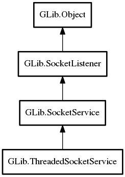

ThreadedSocketService
Object Hierarchy:
Description:
A ThreadedSocketService is a simple subclass of SocketService that handles incoming connections by creating a worker thread and dispatching the connection to it by emitting the run signal in the new thread.
The signal handler may perform blocking IO and need not return until the connection is closed.
The service is implemented using a thread pool, so there is a limited amount of threads available to serve incoming requests. The service automatically stops the SocketService from accepting new connections when all threads are busy.
As with SocketService, you may connect to run, or subclass and override the default handler.
Namespace: GLib
Package: gio-2.0
Content:
Properties:
Creation methods:
Signals:
Inherited Members:
All known members inherited from class GLib.SocketService

All known members inherited from class GLib.SocketListener
All known members inherited from class GLib.Object